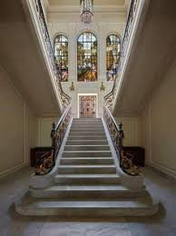
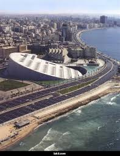
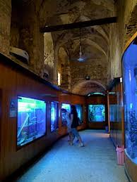

متحف المجوهرات الملكية وهو متحف يعرض مجوهرات الأسر المالكة التي حكمت مصر، ويقع في مدينة الإسكندرية.
شيد القصر عام 1919 في منطقة زيزينيا ويعتبر تحفة معمارية فريدة من نوعها، ومن افضل اماكن السياحة في مصر
وتبلغ مساحته 4185 متراً مربعا وكان يؤول للأميرة فاطمة الزهراء إحدي أميرات الأسرة المالكة.
وقد صمم طبقا لطراز المباني الأوروبية في القرن التاسع عشر ومن الداخل تمت زخرفة القصر بوحدات فنية مميزة اذ يعتبر من اهم الاماكن السياحية في الاسكندرية
شاهد المزيد من الصور
متحف المجوهرات الملكيه
تعد قلعة قايتباي kayitbay castle من اهم الاماكن السياحية في الاسكندرية ، حيث تقع في نهاية جزيرة فاروس بأقصى غرب مدينة الإسكندرية ويحيط بها البحر من ثلاث جهات مما يعطيها روعة وجمالاً خيالياً لتكون اسطورة عروس البحر الأبيض المتوسط.
يعود بناء القلعة الى عام 884 هـ / 1477 م وتعتبر احد اقدم الاماكن السياحية في الاسكندرية كما انها احدى عجائب الدنيا السبعة.
يزور القلعة العديد من السياح يومياً للاستمتاع بمشاهدة التخطيط المعماري المملوكي الذي يعود لعام 882 هـ مما جعلها من افضل اماكن السياحة في الاسكندرية
شاهد المزيد من الصور
قلعه قايتباى
مكتبة الاسكندرية الجديدة هي اعادة بناء لمكتبة الاسكندرية القديمة، احدى اكبر مكتبات عصرها، حيث تم بناء المكتبة من جديد في موقع قريب من المكتبة القديمة بمطنقة الشاطبي في مدينة الاسكندرية
تعتبر مكتبة الاسكندرية رابع أكبر مكتبة فرنكفونية في العالم، وثاني اكبر مكتبة بمحتوياتها بعد مكتبة نيويورك، وتم افتتاح المكتبة الجديدة عام 2002. وتعتبر المكتبة من افضل اماكن السياحة في الاسكندرية
شاهد المزيد من الصور
مكتبه الاسكندريه الجديده
ايعد متحف الاحياء المائية Alexandria Aquarium واحداً من اجمل الاماكن السياحية في الاسكندرية ، يقع المتحف في شارع قايتباي ويضم العديد من الحيوانات والنباتات البحرية المتنوعة كالصدف والأسماك والسلاجف والنباتات والإسفنج التي تعيش في البحيرات والبحار المصرية عموماً والنادرة منها خصوصاً، كما يعرض المتحف كتب ومجسمات للكائنات الحية البحرية في مصر مدينة الاسكندرية .
شاهد المزيد من الصور
متحف الاحياء المائيه
-

-
-

-
